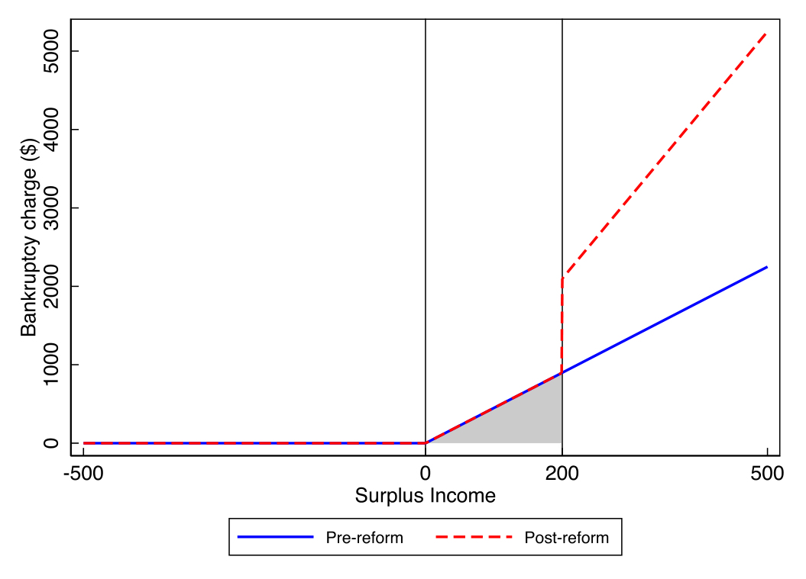
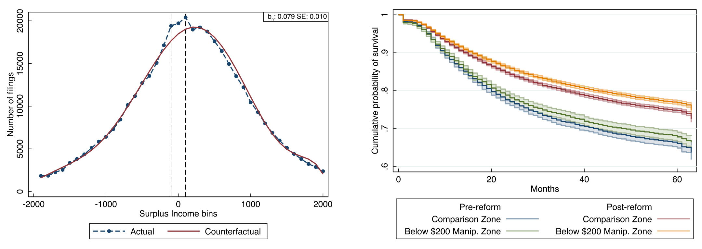
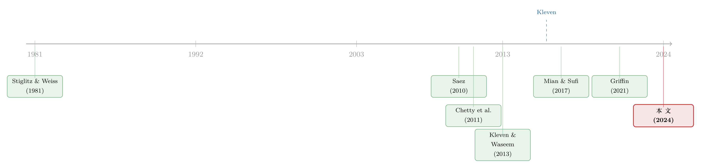

好心的政策，逼出了说谎的债务人——一道 $200 的暗线，如何让债权人反而少收了三成
本文读的是 Mikhed, Raina, Scholnick & Zhang (2024, Journal of Financial Economics)：加拿大 2009 年的一次破产法改革，本意是让资不抵债的债务人多还钱给债权人，却在还款表上留下了一道 $200 的人为「台阶」。结果有 7.9% 的改革后申报者把自己上报的收入悄悄压到这道线以下，债权人因此每笔少收了总回款的 12% 到 36%。更耐人寻味的是——这些「造假」的人，违约率反而更低。
1 引言：一个本想「多收钱」的政策，怎么会「少收钱」？
先讲一个看上去毫无悬念的政策。
一个资不抵债的消费者，欠了一屁股信用卡债，跟债权人谈了一份长达数年的分期还款计划。监管者觉得：这些人还得太少了，债权人太吃亏。于是出台一纸法令，要求其中一部分人多还一点。逻辑顺得不能再顺——你逼债务人多还，债权人当然就多收。
可这篇论文给出的答案，恰好是反的：政策落地之后，债权人非但没多收，反而每笔申报平均少收了 12% 到 36%。
钱去哪儿了？没有去任何人的口袋，它从一开始就没有出现在账本上——因为债务人撒了谎。
这就是 Mikhed、Raina、Scholnick 和 Zhang 这篇文章想讲的核心故事：当你给一个本就有动机隐瞒的人，再加上一个清清楚楚、可以靠「报低收入」就绕过去的门槛，他多半会绕。而这一绕，整个政策的善意就被掏空了。
首先值得停下来想一想的，是这件事为什么难研究。债务人对债权人「报假数据」这件事，经济学家一直知道它存在、也知道它要命——它直接放大了借贷双方的信息不对称 (information asymmetry)，是 Stiglitz 和 Weiss (1981) 以来整个信贷理论的命门。可问题在于，谎言天生不留痕迹。你怎么证明一个人上报的收入是假的？过去的证据几乎全挤在一个角落里:金融危机时期的房贷市场（Griffin, 2021 的综述）。而那里的故事是往上吹——借款人把收入报高，好骗到贷款。
这篇文章的巧妙之处，是它找到了一个收入要往下压的干净场景，并且——这是关键——找到了一把能把谎言「显影」出来的尺子。
2 制度背景：消费者提案，与那条 $200 的暗线
接着，得先把舞台搭清楚。
加拿大的资不抵债消费者有两条路：消费者提案 (consumer proposal) 和消费者破产 (consumer bankruptcy)，大致对应美国的第 13 章和第 7 章破产。本文盯住的是前者——一份由债务人和债权人谈判出来的长期还款计划，最长可达五年，按期还完，剩余债务就一笔勾销；若连续三个月不还，计划作废，视为违约。
关键在于：债务人在提案里到底要还多少，并不是随便谈的，它系在一个叫盈余收入 (Surplus Income, SI) 的量上——粗略说，就是上报收入减去法定允许的开支。SI 越高，按规定要还的钱越多。
而 2009 年 9 月那次《破产与资不抵债法》(Bankruptcy and Insolvency Act, BIA) 的修订，干了一件事:它把 SI ≥ $200 的破产人的还款期，从 9 个月拉长到 21 个月（每月仍按 SI 的 50% 还）。
提案和破产之间有一条「非正式地板」：债权人随时可以拒绝一份提案、逼债务人去走破产清算。所以一旦破产那条路上的还款被监管者抬高，债权人在谈判桌上就会要求提案也相应多还。破产规则的变化，就这样顺着传导到了提案里。
于是，一道台阶 (notch) 凭空出现了。我们来把它算清楚——这是理解全文的钥匙:
- 一个 SI 正好等于
$200的破产人，改革后要还21 × (50% × $200) = $2100； - 改革前同样的人，只需还
9 × (50% × $200) = $900； - 而一个 SI 是
$199的人，几乎什么都不用多还。
换句话说，把上报的 SI 从 $200 挪到 $199，这区区一块钱之差，能省下约 $1200 的还款（若按某些托管人的解释甚至能省到 $2100；作者全程采用最保守的 $1200）。从斜率看，SI 超过 $200 的那段还款线，斜率从改革前的 4.5（9 个月 ×50%）陡增到改革后的 10.5（21 个月 ×50%）。

Figure 1: also illustrates various other elements of the regulatory
这就是一个标准的「悬崖」：站在悬崖左边一步，和站在右边一步，命运天差地别。任何一个 SI 略高于 $200 的人，都有强烈的动机把上报数字往下挪一挪。
3 识别策略：把「谎言」从一条本该平滑的曲线里逼出来
然后，一个自然的问题是:你怎么知道有人真的挪了？
这正是全文最漂亮的一步——它借用了税收文献里成熟的 bunching（聚束）方法（Kleven, 2016 的综述）。核心假设朴素得近乎天真:
如果没有人操纵数据，那么申报在
$200这条线附近的分布，应该是平滑的——$200不过是个普通的数字，凭什么人们的真实收入会专门挤在它下面那一点点？
所以，只要在 $200 左侧看到一处反常的「堆积」，就是操纵的指纹。
作者用 $40 一档的直方图画出改革前后 SI 的分布：改革前，$200 处平平无奇，看不出任何断点；改革后，$200 下方赫然鼓起一个包。再用 McCrary (2008) 和 Cattaneo 等 (2020) 两套密度断点检验来做正式检验——改革后，两套检验都在 p < 0.01 的水平上拒绝了「在 $200 处连续」的原假设；改革前则没有。
这里有一个容易被忽略却很要命的稳健性细节:作者做了安慰剂检验，证明改革后 $200 下方的聚束是独一无二的——它不是「整数效应」(人们爱报整数) 造成的，因为附录里的图显示 SI 本身并不天然在 $200 这种整数上堆积。识别因此立住了。
4 数据
数据来自加拿大破产监管机构 OSB (Office of the Superintendent of Bankruptcy)，是 2006 年 1 月到 2019 年 6 月之间全加拿大几乎所有电子提案申报的全样本，共约 478,053 笔。观测单位是一笔提案申报。它既有申报时的人口学特征、详细的资产负债表与收入支出表（用来重构 SI），也有提案的最终结局——全额偿付、违约、债权人拒绝、债务人撤回等。
需要留意的一个样本约束:实际回款数据只对在数据生成日 (2019 年 6 月) 之前已完成的提案可得，所以涉及实际回款的分析样本缩到约 229,319 笔。从结局看，68% 全额偿付、16% 违约、2.1% 被债权人拒绝。
5 用一把「显影剂」量出来:谁在造假，造了多少假
5.1 第一重证据:7.9% 的人挤在了线下
用 bunching 方法估出来的量级很直白:改革后，恰好挤在 $200 SI 线下方的「超额」申报，占到了全部改革后申报的 7.9%。这就是政策的「副作用」第一次被量化——近八个百分点的人，本该落在线右边，却被赶到了线左边。
5.2 真正关键的一步:他们不是真穷，是「藏了钱」
但真正关键、也最反直觉的一步在于:作者还想知道，这些把 SI 报到 $200 以下的人，到底是真的没钱，还是有钱装没钱？
这两者的后果天差地别。如果他们是真穷，那「报低收入」不过是诚实地记录了窘迫；可如果他们其实藏着收入 (hidden income)，那这就是赤裸裸的策略性造假——而且藏起来的那部分钱，会变成他们日后的流动性缓冲。
怎么区分？作者用了一个绝妙的间接检验:违约率。
直觉是这样的——藏了钱的人，手里有额外流动性，在还款计划遇到坏年头时更扛得住，因此更不容易违约。于是他们上了 Cox 比例风险模型 (Cox proportional hazards model)，在控制了随时间变化的差异和其他因素之后，发现:那些操纵 SI 的债务人，违约的概率显著低于同侪。
这是一个漂亮的反证:一个声称自己穷到 SI 不足 $200 的人，却比别人更还得起钱——那他当初报的「穷」，多半是装的。谎言，就这样从违约数据里被「显影」了出来。
这一步的逻辑值得反复咀嚼:它把一个无法直接观测的东西（收入是真是假），转化成了一个可以观测的东西（违约与否），再用经济直觉把两者连起来。这正是好的实证设计的样子。
5.3 于是反转出现:债权人反而被掏空了三成
绕回最初那个悬念。债务人少报了收入、少还了钱，债权人损失了多少？
作者用两种口径估算。一种是非参数的:把聚束者实际还的钱，和「假如他们没操纵、本该还的钱」作比较；另一种是参数的:用线性回归比较聚束区申报，和那些聚束者「本该归属」的 SI 区域的申报。两条路殊途同归——债权人因 SI 被操纵，每笔申报要损失总回款的 12% 到 36%。

Figure 6: and for the rest of the paper, we adopt the most conservative
一个本想替债权人多讨回钱的政策，最终让债权人每笔少拿了一两成到三成多。善意被操纵彻底反噬。
5.4 债权人难道不反击吗？
接着的问题是:债权人不是傻子，提案要他们点头才生效，他们为什么不直接多拒绝几份可疑的申报？
作者的发现很微妙。总体上，改革后聚束区申报的被拒率没有显著上升——对一份「典型」申报，债权人并没有警觉。但是，当作者把样本切到那些资产很高、或房屋净值很高的债务人时，改革后聚束区申报的被拒率显著上升了。
换句话说，债权人不是看不出猫腻，而是只在数据自相矛盾到刺眼时才出手:一个上报 SI 不到 $200、却坐拥大笔资产的人，明显说不通。可见债权人对操纵的反击是不完全的——金融中介（破产托管人本应核验财务数据）的介入，也没能消除策略性造假。
（关于「明明拿了不该拿的钱、却又留下了可被识别的痕迹」这一类故事，可参见《偷来的钱，会去买房——疫情救济金欺诈如何悄悄抬高了美国房价》。）
6 方法补课:bunching 到底是怎么算出来的？
为了让上面的「7.9%」和「12%–36%」不只是两个数字，这里把这条研究的统计内核——bunching 估计——一步步拆开。它本质上是一道「反事实密度」的填空题。
第一步，把 SI 切成等宽的小箱（bin），数出每个箱里有多少笔申报，记为 \(c_j\)，箱中心的 SI 值记为 \(z_j\)。
第二步，划出一个怀疑被操纵的「聚束窗口」 \([z_L, z_U]\)（即 $200 下方那一段），然后用窗口之外的数据拟合一条光滑的多项式曲线，并把窗口内的箱用一组虚拟变量「挖空」，避免它们污染对反事实的估计。这就是这一文献（Saez, 2010；Chetty 等, 2011）的标准回归:
第三步，把估计出的多项式（即去掉 \(\gamma\) 项后的预测值）当作反事实计数 \(\hat{c}_j\)——也就是「假如没人操纵，每个箱里本该有多少人」。那么窗口内多出来的人，就是被赶进来的聚束者:
$$\hat{B} = \sum_{j=z_L}^{z_U}\left(c_j - \hat{c}_j\right)$$
再用反事实的平均高度把它归一化，得到一个无量纲的「超额聚束」 \(\hat{b}\)，便于跨场景比较:
$$\hat{b} = \frac{\hat{B}}{\textstyle \frac{1}{z_U - z_L + 1}\sum_{j=z_L}^{z_U}\hat{c}_j}$$
直觉很清楚:\(\hat{B}\) 就是「悬崖左边凭空多出来的那一堆人」。把它换算成占改革后总申报的比例，就是那个 7.9%；把这些人「本该多还、却没还」的钱加总，就是债权人 12%–36% 的损失。整套方法的全部说服力，都押在第一步那条反事实曲线画得对不对——这也正是我在下文「评论」里最想盯住的地方。
7 文献脉络
把这篇文章放回它生长的谱系里，会看得更清楚。
最上游，是 Stiglitz 和 Weiss (1981) 奠定的信贷市场信息不对称传统——借贷双方信息不对等，是一切「谁向谁隐瞒了什么」之问的源头。
往下，方法这条线来自税收文献:Saez (2010) 最早发现纳税人会在税率「拐点」处聚束，Chetty 等 (2011) 和 Kleven、Waseem (2013) 把它发展成估计「拐点 (kink)」与「台阶 (notch)」处行为反应的成熟工具，Kleven (2016) 做了集大成的综述。这套工具后来被搬进信贷市场:DeFusco 和 Paciorek (2017) 看房贷在合规贷款上限处的聚束，Bachas 等 (2021) 看 SBA 贷款担保率表上的台阶。

而内容这条线，过去几乎被房贷欺诈垄断:Mian 和 Sufi (2017)、Jiang 等 (2014)、Garmaise (2015)、Griffin 和 Maturana (2016)、Kruger 和 Maturana (2021) 等反复记录了信贷扩张期借款人虚报高收入的现象，Griffin (2021) 做了综述。
本文的位置，恰好是几条线的交汇点，并在两个方向上做了反转:第一，它把「债务人操纵」从房贷市场拓展到了消费债务的重新谈判；第二，也是更妙的，它记录的是收入往下报——与房贷文献里的往上吹刚好相反。两相对照，作者点出一个干净的结论:债务人会朝两个方向操纵收入，吹高还是压低，全看激励指向哪边。这篇文章同时也接上了「提高债务人还款会引发什么」这条家庭金融文献（Campbell, 2013；Fuster 和 Willen, 2017；DiMaggio 等, 2017；Keys 和 Wang, 2019）——前人发现提高还款会推高违约，本文则指出它还会催生一种全新的反应:策略性造假。
8 评论与延伸（Q&A + 研究方向）
(a) 几个可能的疑问
Q：这跟房贷市场的「虚报收入」到底有什么本质不同？
方向相反，但机制同源。房贷里借款人往上吹收入，为的是拿到贷款；这里债务人往下压收入，为的是躲开更高的还款。共同点是收入都是「可上报、难核验」的软信息，激励指向哪边，谎就往哪边撒。本文的贡献正是用一个干净的台阶，证明了「向下」这一半也真实存在。
Q：bunching 估计的反事实可信吗？万一改革本身也改变了真实收入分布呢？
这是这类方法的命门。作者的防线有三层:一是改革前
$200处完全平滑、无断点，说明断点是改革「制造」的；二是 McCrary 与 Cattaneo 等两套独立的密度检验都在p<0.01上拒绝连续；三是安慰剂检验排除了「整数堆积」这一最自然的替代解释。三层叠起来，反事实是站得住的——但它终究依赖「若无操纵则分布平滑」这一不可直接检验的假设。
Q：违约率更低，难道不能有别的解释？
能想到的替代是「操纵者本来就是更自律、更会理财的人」。但作者控制了一系列可观测特征和时变因素后，结论仍稳健。更重要的是逻辑方向:一个自称穷到 SI 不足
$200的人却更还得起钱，最简约的解释就是他藏了收入。这与「他更自律」并不互斥，但「隐藏收入」能同时解释聚束和低违约两件事。
Q：托管人不是要核验财务数据吗，怎么还拦不住？
这恰是本文一个发人深省的发现:即便有被法律要求核验数据的金融中介在场，策略性造假依然普遍存在。债权人只在数据「自相矛盾到刺眼」（如低 SI 配高资产）时才显著提高拒绝率，对典型申报则反应平平。中介的存在缩小、但没有消除信息操纵的空间。
Q：12%–36% 这个区间为什么这么宽？
因为有两套估计口径（非参数 vs 参数）和不同的保守假设（如每笔省
$1200还是$2100）。作者全程采用更保守的下限假设，所以即便区间宽，12%这个下界已经足够说明问题:政策的善意被实打实地侵蚀了一两成以上。
Q：这个加拿大的发现，能外推到别处吗？
作者特意指出，类似激励在很多地方都有:美国 2005 年的 BAPCPA「收入审查」台阶（Gross 等, 2021；White, 2007）、工资扣押法里的收入门槛（Yannelis, 2020），乃至各种家计调查 (means-tested) 项目。凡是「报低收入就能少付钱」的制度，都可能复制这套故事。
(b) 几个可能的研究问题与提案
1. 把这套逻辑搬到收入驱动型还款（IDR）的学生贷款上
【经济故事】美国的收入驱动还款计划同样把月供系在「上报收入」上，按理也该诱发向下操纵的激励，机制与本文几乎同构。 【可行性】中。可得的行政化报税与 IDR 申报数据存在（参见《欠得越久，过得越好？——学生贷款里那场静悄悄的「付款延期」》），难点在于找到一个像
$200这样清晰的台阶来做 bunching；若无台阶，识别会弱很多。
2. 操纵在公司债/信用市场的对应物:契约触发点附近的财务「微调」
【经济故事】债券契约 (covenant) 里常有基于杠杆率、利息保障倍数等会计指标的硬门槛，一旦越线就触发违约或加价。借款企业有动机把财务数据「修」到刚好不越线——这正是公司层面的 bunching。 【可行性】中。Compustat 季度数据 + 契约门槛（如 DealScan）可识别门槛位置，对触发指标做密度断点检验。难点是会计盈余管理本就普遍，要把「为躲契约」从一般盈余管理里干净剥离出来。
3. 外资持有人是否更难、还是更易操纵申报？
【经济故事】信息不对称的强弱与持有人身份相关。若一类债权人（如外资机构）核验能力更弱、监督更远，债务人面对他们时是否操纵得更狠？这能把「中介核验不完全」这一发现，细化到「对谁不完全」。 【可行性】低到中。需要能把申报/还款数据与债权人类型匹配起来的微观数据，现实中这类匹配在消费信贷里很难得；在公司债持有人层面或许更可行。
4. 债权人学习:多次博弈后，拒绝率会逐步收敛到「该拒的都拒」吗？
【经济故事】本文是改革后的截面快照。若把时间维度拉长，债权人/托管人会不会随经验积累而越来越擅长识别「低 SI + 高资产」的矛盾，从而逐步压缩操纵空间？这是一个关于市场自我纠错速度的问题。 【可行性】高。本文数据已横跨 2006–2019，直接在改革后逐年估计聚束量级与可疑申报拒绝率的时间趋势即可，无需新数据。
5. 福利账:操纵的「再分配」净效应到底是正是负？
【经济故事】债权人损失了
12%–36%，但这部分钱并未蒸发，而是留在了债务人手里、并降低了其违约率。从社会福利看，这究竟是无谓损失，还是一种（扭曲的）保险？需要一个结构模型来权衡核验成本、违约的社会成本与流动性的边际价值。 【可行性】中。可在本文 bunching 估计之上搭一个简单的债务人最优化 + 债权人接受决策的结构框架，用聚束量级与违约风险来识别关键弹性。
我的判断
这篇文章最值得称道的，是它把「证明谎言存在」这件几乎不可能的事，做得既干净又克制。一个被监管者亲手制造、且与真实收入无关的 $200 台阶，提供了近乎理想的外生变异；而「操纵者违约率更低」这一间接检验，则把「报低收入」从「真穷」里漂亮地剥离了出来——这是全文的灵魂，也是它高于一般 bunching 应用的地方。结论本身（提高还款反而经由操纵伤害债权人、且中介核验不能消除操纵）对政策设计有直接的警示意义:问题不是「要不要」抬高门槛，而是「怎么」抬，才不会被门槛两侧的人钻空子。
对识别，我有两点保留。其一，bunching 的全部说服力押在那条反事实曲线上，而多项式阶数、聚束窗口边界 \([z_L, z_U]\) 的选择都带有研究者自由度，7.9% 与 12%–36% 对这些设定有多敏感，值得读者追问。其二，「操纵者违约率更低 ⇒ 他们藏了收入」这一推断虽优雅，但仍是间接的:若操纵这一行为本身筛选出了某类更精明、更具还款意愿的人，低违约就未必全是「隐藏流动性」的功劳——尽管这并不削弱「他们当初确实在造假」这一核心结论。
后续我最想看到的，是把时间维度用足:债权人和托管人会不会「学会」识别操纵？以及把这套「向下操纵」的镜头，对准公司债契约门槛与外资持有人——那里同样满是清晰的台阶，也同样满是有动机、有能力「修数据」的人。
参考文献
- Bachas, N., Kim, O. S., Yannelis, C. (2021). Loan guarantees and credit supply. Journal of Financial Economics 139(3), 872–894.
- Cattaneo, M. D., Jansson, M., Ma, X. (2020). Simple local polynomial density estimators. Journal of the American Statistical Association 115(531), 1449–1455.
- Chetty, R., Friedman, J. N., Olsen, T., Pistaferri, L. (2011). Adjustment costs, firm responses, and micro vs. macro labor supply elasticities: Evidence from Danish tax records. Quarterly Journal of Economics 126(2), 749–804.
- DeFusco, A. A., Paciorek, A. (2017). The interest rate elasticity of mortgage demand: Evidence from bunching at the conforming loan limit. American Economic Journal: Economic Policy 9(1), 210–240.
- Griffin, J. M. (2021). Ten years of evidence: Was fraud a force in the financial crisis? Journal of Economic Literature 59(4), 1293–1321.
- Gross, T., Kluender, R., Liu, F., Notowidigdo, M. J., Wang, J. (2021). The economic consequences of bankruptcy reform. American Economic Review 111(7), 2309–2341.
- Kleven, H. J. (2016). Bunching. Annual Review of Economics 8, 435–464.
- Kleven, H. J., Waseem, M. (2013). Using notches to uncover optimization frictions and structural elasticities: Theory and evidence from Pakistan. Quarterly Journal of Economics 128(2), 669–723.
- McCrary, J. (2008). Manipulation of the running variable in the regression discontinuity design: A density test. Journal of Econometrics 142(2), 698–714.
- Mian, A., Sufi, A. (2017). Fraudulent income overstatement on mortgage applications during the credit expansion of 2002 to 2005. Review of Financial Studies 30(6), 1832–1864.
- Mikhed, V., Raina, S., Scholnick, B., Zhang, M. (2024). Debtor income manipulation in consumer credit contracts. Journal of Financial Economics 157, 103851.
- Saez, E. (2010). Do taxpayers bunch at kink points? American Economic Journal: Economic Policy 2(3), 180–212.
- Stiglitz, J. E., Weiss, A. (1981). Credit rationing in markets with imperfect information. American Economic Review 71(3), 393–410.
- White, M. J. (2007). Bankruptcy reform and credit cards. Journal of Economic Perspectives 21(4), 175–200.
- Yannelis, C. (2020). Strategic default on student loans. Working paper.